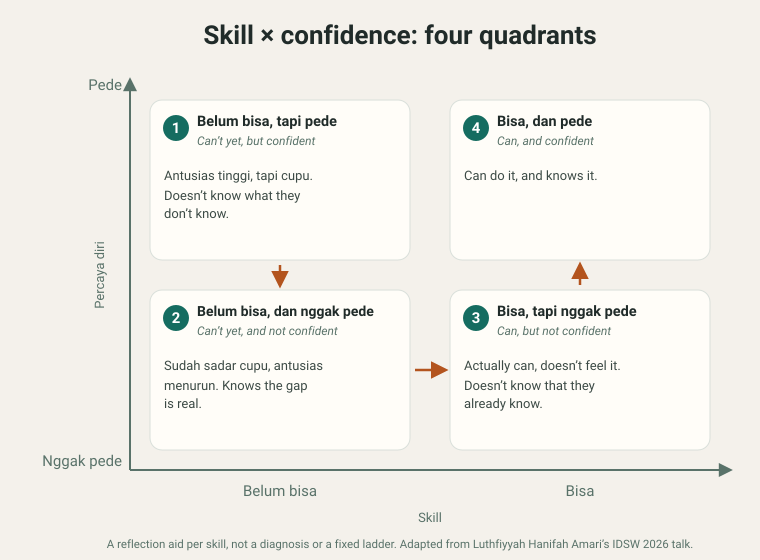

What Good Mentorship Felt Like to Me as a Junior Engineer: an IDSW lightning talk, checked
Talk reading, 22 Nov 2026. Seven slides photographed during the 14:30-15:30 lightning-talk block of IDSW 2026 day two, its core framework slide is titled "Skill × percaya diri: 4 kuadran" (skill times self-confidence: four quadrants). Attribution: the talk's closing thank-you slide carries the printed name Luthfiyyah Hanifah Amari, matching the agenda listing "What Good Mentorship Felt Like to Me as a Junior Engineer - luthfiyyah hanifah amari"; attribution rests on that printed name plus the official agenda, not on anyone's appearance. The slides are in Indonesian; quotes are our translations. The photos are not reproduced here, and the closing slide's personal thank-you story is summarized, not quoted in full. An earlier slide from the same block, photographed at 14:42, described the speaker's support ecosystem (a mentor, a study group, a community); it carries no name, but its theme matches this talk, and we now read it as very likely from the same deck, still unconfirmed.

Our redrawn diagram of the talk's framework slide (the photo itself is not published). Confidence is vertical, skill horizontal; the arrows are the talk's 1-to-4 order, which matches the classic four stages of competence.
What the slide says
Two axes: skill (belum bisa / bisa - can't yet / can) and confidence (nggak pede / pede - not confident / confident), giving four quadrants with arrows 1 → 2 → 3 → 4:
| Quadrant | Slide text (translated) | Maps to |
|---|
| 1. Can't yet, but confident | High enthusiasm but clueless-overconfident, and doesn't know that they don't know | Unconscious incompetence |
| 2. Can't yet, and not confident | Now aware of being clueless; enthusiasm drops, but they know that they don't know | Conscious incompetence |
| 3. Can, but not confident | Already can, but not confident, and doesn't know that they actually know | Conscious competence |
| 4. Can, and confident | Can and confident, and knows that they know | Unconscious competence |
The slide's footer (partly legible) says it was assembled by the speaker, inspired by Stages of Competence and Situational Leadership. The quadrant-to-stage mapping above is ours, made explicit: the slide's 1-to-4 sequence follows the classic four stages of competence (unconscious incompetence, conscious incompetence, conscious competence, unconscious competence), a learning-stages model used by Gordon Training since the 1970s (Gordon Training's own description, verified 22 Nov 2026). Situational Leadership is the Hersey model of matching leadership behavior to a team member's readiness per task (situational.com, verified 22 Nov 2026), which uses a similar competence-by-commitment grid.
The per-quadrant detail slides
Two further slides from the same deck give each quadrant a condition ("kondisi") and a response ("solusi"), written for the person guiding the learner. Quadrants 1, 2 and 3 have been photographed so far, plus the closing and lead-role slides covered below; the quadrant-4 detail slide and any remaining deck have not been seen, so this is not a full summary of the talk.
| Quadrant | Kondisi (as on slide) | Solusi (as on slide) |
|---|
| 1. Can't yet, but confident | "I don't know what I don't know. Unit test? API test? Staging? Observability? All I know is coding." | "Dikasih task": give them tasks; exposure opens the blind spots |
| 2. Can't yet, and not confident | "I'm aware I can't yet. At the start of a project I often feel 'I don't think I can do this.'" | "Diajarin. Micromanage": teach them, give examples, close guidance early; the last phrase reads roughly "suruh tanpa AI" (have them work without AI) but was blurry |
| 3. Can, but not confident | "I know the answer, but I'm not confident. Stuck, keeps asking, not independent." | "Dipancing mikir, lalu diulang": prompt them to think, then repeat. Ask back "what do you think?" or give only a clue, so they reason for themselves; then repetition, like deploying to production: scary at first, confident over time |
The quadrant-2 word "micromanage" is the slide's own choice; read alongside "taught, given examples", the intent is close early scaffolding that fades as the learner closes the gap, not permanent control. The quadrant-1 remedy matches the model's logic too: for someone who cannot see the gap, a concrete task is what makes the gap visible. Both are the speaker's mentorship advice from her talk's framing, not general management prescriptions.
After quadrant 4: "not a finish line"
A later slide in the same deck closes the loop. Three points, transcribed from the photo:
- "Gini doang?" ("that's it?"): after the first project, it can feel like the work ahead will all be similar
- New task: caching, DynamoDB: you are back in quadrant 1
- Per skill: every skill has its own quadrant; going back to 1 is normal, not a sign of failure
This is the deck's own answer to the "fixed ladder" worry: the quadrant-4 detail slide itself has not been photographed, so the deck may say more about that square, but the closing slide makes clear the speaker does not treat quadrant 4 as a final state.
The lead's role
A slide titled "Peran lead: lead punya posisi powerful" (the lead's role: leads hold a powerful position) turns the map toward whoever guides the team. Three cards:
- Helicopter view: see our blind spots and all the team's projects
- Mapping: know what skill and level each project needs, and who it suits
- Mindset grow: deliberately exposing engineers to new things
The slide closes with thanks to leads who grow their engineers. Note the consistency with the quadrant-1 remedy: exposure to the right task is presented as the lead's main instrument, and the mapping card is about matching tasks to people, not ranking people.
Closing
The deck closes with a thank-you slide addressed to mentors, seniors, managers and the speaker's first company for the first chance they gave her, plus a light meme panel. The printed name on this slide is what grounds the attribution above. We leave her personal story at that summary.
Reading
Both underlying models are real and long-lived management/learning frameworks, and the slide's synthesis is faithful to them. What they are: practical heuristics for teachers, mentors and learners to talk about where someone stands on a specific skill. What they are not: validated psychological measurement, a diagnosis, or a fixed ladder every learner climbs in order; even Gordon Training presents the stages as a way to understand why learning feels slow and uncomfortable, not as a test. The quadrant is best used exactly as a reflection prompt: name the evidence for your placement, and let the square suggest the next move. This slide is also not the Dunning-Kruger effect, a different claim about miscalibration that the slide does not cite.
Where the practice version lives
A reflection exercise derived from this slide, placing one skill you are learning in a quadrant by evidence and matching the next move, is stage ca9 in the Career path of Sanggup, with the same "reflection aid, not a diagnosis" framing.
Sources checked 22 Nov 2026